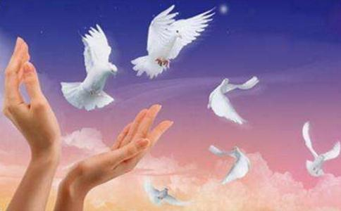

世人吃肉，认为理所当然，就任意
亡者忌辰及清明扫墓、中秋祭拜，应当戒杀以增加亡者的福报，杀生祭拜，只会加重往生者的恶业而已。山珍海味排满桌，能让死者从九泉之下复活爬起来吃吗？这种无益且有害的事，聪明人不愿意做。这是世人习以为常却不明白错在那里，令人痛哭流涕，叹息不已的第三件事。
第二，生子不要杀生。
可怜的父母，生我时非常辛劳，自己诞生的日子，正是父母迈向衰老死亡的开始。这一天，应该戒杀吃素，广做善事，使历代祖先早日超升，健在父母增福延寿。为什么忘了母亲怀孕的
世间婚礼，从下聘、合八字到结婚，期间杀生宴客，数量不知有多少。结婚，是繁衍子孙的开始，繁衍的开始却灭绝动物的子息，太没有道理！婚礼是吉祥事，吉祥日却大开杀戒，吉事变凶事，真是太悲惨了！这是世人习以为常却不明白错在那里，令人痛哭流涕，叹息不已的第四件事。
第五，宴客不要杀生。良辰美景，宾主相聚，蔬果菜羹也可尽兴，何必杀害生命，讲求甘美呢？为了餐桌林盘中欢乐饱食，却让厨房砧板上的畜生怨恨哀号，有人性的人，不会悲伤吗？这是世人习以为常却不明白错在那里，令人痛哭流涕，叹息不已的第五件事。
第六，祈禳不要杀生。 世间人有病苦灾难，往往杀生祭神，祈求福佑。应该想想，拜神是想消灾解厄，延长
世人为了衣食，有的打猎捕鱼，有的杀牛杀猪，做为谋生的方法。但依我看，不以杀生为业的人，照样衣食无缺，没有饿死冻死。以杀生来谋生，天理所不容，因杀生而富贵，百人中找不出一个，只有种下堕入
生命是最宝贵的。大家都希望自己的生命之花。开得璀璨夺目。过得舒适安乐。如一但生命受到威胁。危害损伤。就会不惜一切代价去保卫他。平时胆小怕事的人。会勇敢的起来搏斗。一贯省吃俭用的人。会倾家荡产与医院医治危及生命的疾病。讲究仪表容貌的人，甚至也会割去身体的一部分。来保全生命。减轻痛苦。人类如此。动物何尝也不是如此？为了不受无故捕杀，深入山林。远避
自己要求离苦难。也希望人家得安乐。推己及人之心。是人之常情。有恻隐心的人。看见动物将杀是的恐惧得全身发抖。也会感伤落泪。有同情心的人听到被杀时候的悲惨哀号，而不忍食其肉。有恻隐心和同情心的人。对万物之灵的称号。是当之无愧的。
现在有一些人，一朝得志、有财有势，就穷奢极欲。弱肉强食之野性大发。贪吃之心，使人难以想像。连蚂蚁、蜗牛、蜘蛛……都列入美肴之谱。酒席上的欢笑的代价竟是千万条生命的厄难。且看厨房里，刨腹剜心、斩首刮鳞、油炒刀割、拨皮抽筋、火灸水煮、盐腌酒浸……一幅幅悲惨景象。岂不是人间活地狱，常言道，福兮祸所倚。享受口福的时候，埋藏着多少杀身的灾殃，将来还要你自己承担，去偿还。我们在恣心快意的时候，要冷静观察一下它的后果才好。
什么事都离不开因果法则。种瓜得瓜，种斗得斗。杀人尝命。欠债还钱。谁都不会反对这几句话。所以害人终必害己。常言说善有善报，恶有恶抱。不是不报，时候未到。时间一到【条件成熟】。统统要报。时间是善业恶业的催化剂。有的时间长，要到下世或下下世才成熟。有的时间短，今世或眼前就能看到。
放眼当今的末法时代，愚昧无知、不明因果的世人为了赚钱糊口、口腹之欲每天都在残杀无数无辜的生命，实在令人触目惊心。迷茫的人们只知道自己的生命可贵，孰不知包括蝼蚁在内所有的众生无一不是如此，每一个众生都同样有避苦逐乐、求生怕死的念头，惨无人道地夺去这些可怜生灵的性命无论是从世间法还是
那么反过来我们不难推知，戒杀吃素
在这个世界上，生命是最可贵的。当我们濒临死亡而被人救度，那将比得到全世界的